Analisis de modelos de ML supervisados

La idea de este post es intentar crear varios modelos de Machine Learning que permitan predecir si el resultado de un análisis de un sonar es una roca o una mina. Este modelo es inherentemente de clasificación, ya que la variable objetivo será el atributo que determine si es una mina o no (llamado class), y por lo tanto se realizará un análisis de los distintos modelos de clasificación (bajo las mismas condiciones), para evaluar qué modelo se ajusta mejor a este caso en particular. Notar que no se realizará preparación de datos previa, justamente para identificar ventajas y desventajas de los distintos modelos (por ejemplo, algunos serán perjudicados por la distribución de los datos, mientras que otros son más resistentes a esto. O quizás la falta de normalización o el tipo de datos de las entradas afecte de manera negativa a algún modelo pero a otros no, etc.).
Análisis de datos
Para poder ver si un elemento es una roca o una mina, se utiliza un sonar que emite distintas frecuencias. Según cómo vuelvan esas frecuencias, el sonar puede detectar el objeto. En este caso, el dataset viene con 60 frecuencias distintas, y con los resultados que las mismas tuvieron frente a distintos objetos. Notar que dichas frecuencias son números reales.
Proceso de RapidMiner
Para realizar esta prueba, se mantendrán las mismas configuraciones para todos los modelos. En el proceso se utilizará un cross-validation para separar la data de training de la data para testing, con 10 folds y una semilla de 2000. Dentro del cross-validation se utilizarán los datos de training para entrenar los distintos modelos de clasificación, y se calculará la performance del resultado.
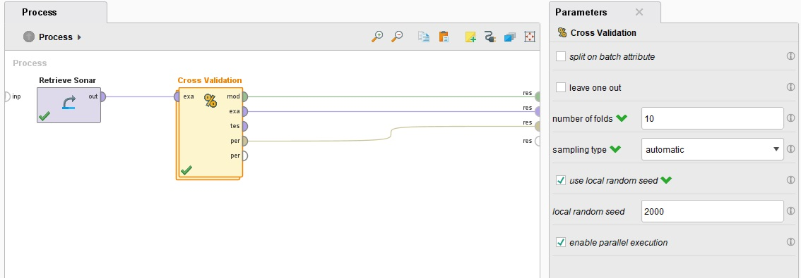
En el caso de las minas, si el modelo predice correctamente que es una mina se podrá desarmar, si el modelo predice correctamente que es una piedra no pasará nada, y si predice que es una mina pero era una piedra termina siendo una falsa alarma, que no es el caso deseado, pero en todo caso no hay peligro real. Por lo tanto, el peor resultado posible para el modelo son los casos donde el modelo predice piedra y hay una mina, dado que llevará a un resultado catastrófico.
Notar que no hubo procesamiento previo de los datos, ya que el objetivo es comparar el comportamiento de los modelos, no necesariamente conseguir el mejor valor posible. Esto es importante porque este dataset posee valores reales en todos sus predictores, lo que será manejado de distinta manera por cada modelo (hay modelos que se comportan mejor frente a valores numéricos que otros), y puede llevar a diferentes resultados.
Naive Bayes
Proceso utilizando Naive Bayes:
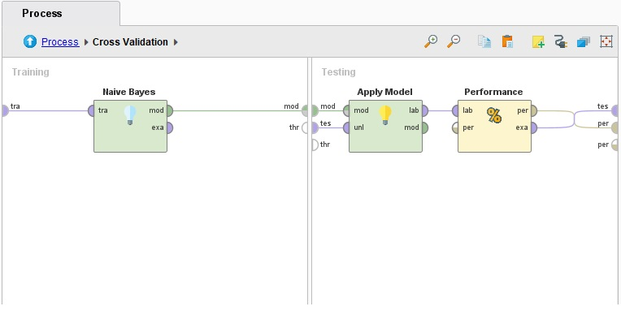
Matriz de confusión: 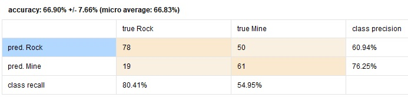
En este caso, se puede ver que Naive Bayes tiene un 67% de exactitud, lo que no es ideal, pero no es un mal resultado siendo que no hubo procesamiento previo de los datos. Aunque si tenemos en cuenta solamente el caso en el que la mina realmente existe, vemos que tiene una exactitud de aproximadamente 55%, lo que quiere decir que cuando la mina existe, al modelo le cuesta darse cuenta, lo que no es nada bueno.
Desicion Trees
Proceso utilizando Desicion Trees:
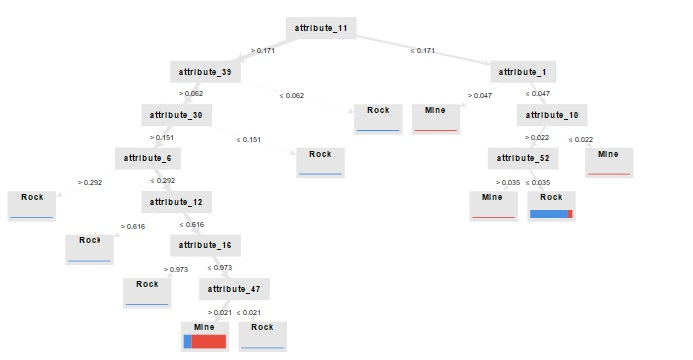
Matriz de confusión: 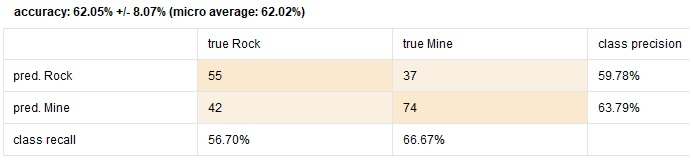
Con árboles de desición el porcentaje es bastante menor que en Naive Bayes, con un porcentaje de 62% de exactitud, pero por otro lado, tiene un aproximadamente 67% de exactitud a la hora de predecir minas reales, lo que se podría considerar una mejora frente a Naive Bayes.
Logistic Regression
Proceso utilizando Logistic Regression:
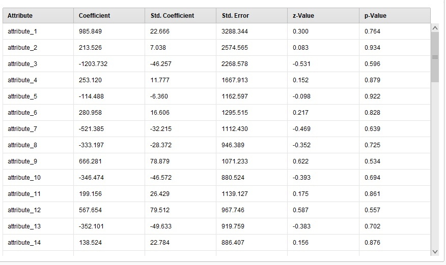
Matriz de confusión: 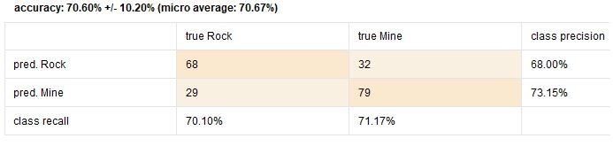
La regresión logística en términos simples consiste en utilizar una función que tiene un umbral, donde si el valor es menor al umbral se considera de una clase, y si es mayor se considera de la otra. Se puede ver que tiene una performance bastante mayor a la de Naive Bayes y Desicion Trees, dado que no solo tiene una exactitud del 71%, si no que también es mejor detectando tanto piedras como minas. En el caso de haber una mina, tiene un 71% de exactitud para detectarla, lo que es una mejora en todo sentido frente a los casos anteriores.
Esto probablemente se deba a que, al contrario de los otros dos modelos, la regresión logística es capaz de operar con valores continuos como lo son los números reales, lo que conlleva a un mejor rendimiento en estos casos. Los otros dos modelos soportan números reales, pero podrían tener un mejor comportamiento si separaramos las distintas frecuencias en rangos, para generar una menor cantidad de clases y que les resulte más sencillo relacionar los datos.
LDA
Proceso utilizando Linear Discriminant Analysis:
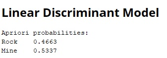
Matriz de confusión: 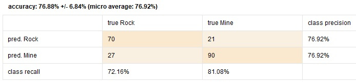
Este caso supera todos los modelos anteriores, con un 77% de exactitud total, e incluso un 81% en el caso de ser una mina. LDA crea un nuevo eje que maximiza la separación entre las clases. En este contexto, lo que busca es determinar si un nuevo elemento se acerca más a la media de los elementos clasificados como rocas o a la media de los clasificados como minas, y en base a esto realiza la predicción.
K-NN
Proceso utilizando K-NN:
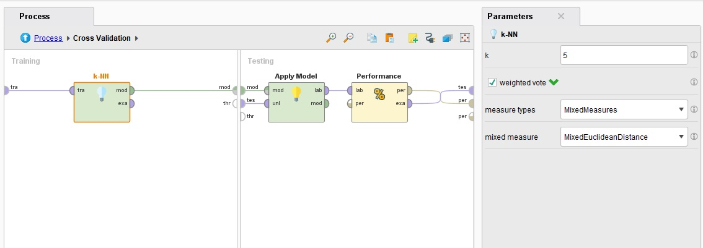
Matriz de confusión: 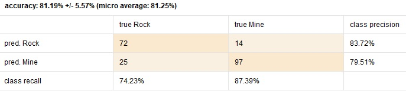
Aquí se puede ver que este modelo ha tenido la mejor performance de todos los modelos hasta ahora, con un 81% de exactitud en total, y si el objetivo a analizar es una mina resulta tener un 87% de exactitud, lo cual es bastante alto, considerando que no se buscó optimizar el modelo ni preparar los datos previamente.
Análisis de Resultados
Una de las posibles razones por las que los modelos K-NN y LDA funcionan tan bien en comparación a los otros modelos puede ser porque las dos clases se encuentran muy separadas: 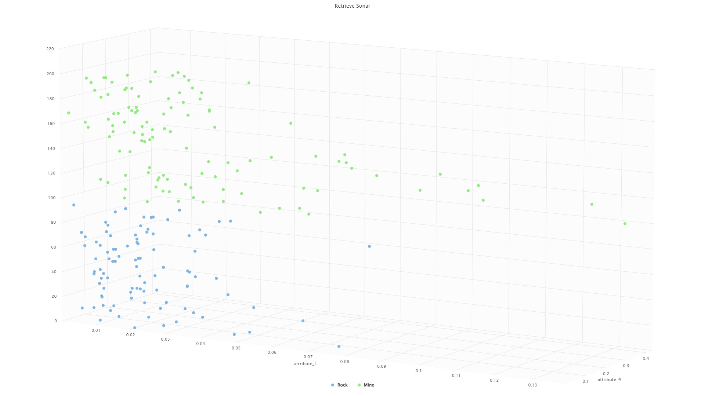 Otra posibilidad es que los datos se aproximan a una distribución normal, lo que mejora el funcionamiento de LDA: 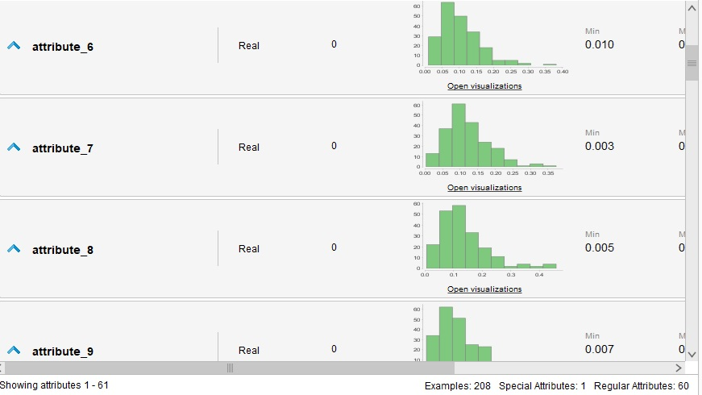 Por otro lado, Naive Bayes puede tener un comportamiento peor porque asume que los datos son condicionalmente independientes, lo que no necesariamente se cumple en este caso, mientras que la regresión logística y LDA son más resistentes a esto. En el caso de los árboles de desición, quizá esté tendiendo a sobreajustar por el tamaño del dataset o por el ruido, mientras que tanto K-NN como LDA y regresión logística son más resistentes al sobreajuste por ruido.
Por último, K-NN es el modelo que mejor pudo predecir la variable objetivo. Esto se puede deber a distintas razones:
- K-NN no pierde exactitud según la distribución de los datos, lo que hace que su performance sea mejor que la de LDA
- Como LDA se basa en promedios y K-NN en los nodos cercanos, K-NN se ve beneficiado con datasets chicos donde las clases similares se encuentran cerca, dado que LDA calcula el promedio de todos los datos. Esto también quiere decir que se ve mayormente afectado por outliers que K-NN, dado que con un valor pequeño de K, K-NN toma en cuenta una menor cantidad de outliers que LDA.
Modelo en Python
Replicando el proceso realizado con K-NN en RapidMiner utilizando Python (utilizando el dataset Sonar de UCI:
import pandas as pd
import numpy as np
import matplotlib.pyplot as plt
from sklearn.model_selection import train_test_split, KFold
from sklearn.neighbors import KNeighborsClassifier
from sklearn.metrics import accuracy_score, confusion_matrix, ConfusionMatrixDisplay
data = pd.read_csv("sonar.csv")
X = data.iloc[:, :-1].values # Features
y = data.iloc[:, -1].values # Target
kf = KFold(n_splits=10, shuffle=True)
knn = KNeighborsClassifier(n_neighbors=5)
accuracy_list = []
all_predictions = []
all_true_labels = []
for train_index, test_index in kf.split(X):
X_train, X_test = X[train_index], X[test_index]
y_train, y_test = y[train_index], y[test_index]
knn.fit(X_train, y_train)
y_pred = knn.predict(X_test)
all_predictions.extend(y_pred) # Store predictions
all_true_labels.extend(y_test) # Store true labels
accuracy = accuracy_score(y_test, y_pred)
accuracy_list.append(accuracy)
conf_matrix = confusion_matrix(all_true_labels, all_predictions)
print("Confusion Matrix:\n", conf_matrix)
ConfusionMatrixDisplay(confusion_matrix=conf_matrix).plot()
print("Accuracies for each fold:", accuracy_list)
print("Mean accuracy:", np.mean(accuracy_list))
plt.show()
Esto da como resultado:
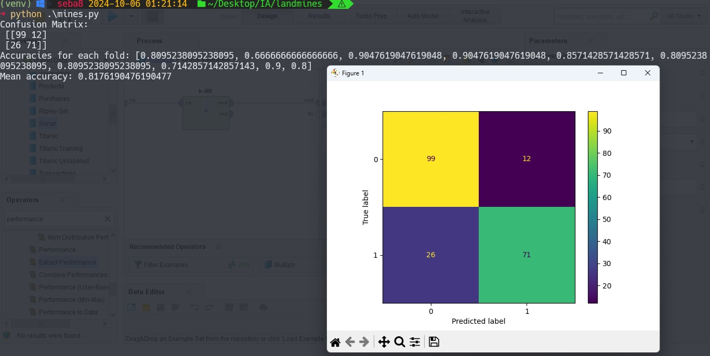
De esta forma se puede verificar que mediante Python se puede llegar a una performance muy similar, comprobando que K-NN resulta ser un modelo que se ajusta bastante a este caso de uso y a estos datos en particular.
Para seguir comparando...
- Se pueden añadir nuevos modelos a la comparación, como SVM o Random Forest
- Se pueden ajustar los parámetros de los modelos (en este caso todos los parámetros fueron los predeterminados)
- Se puede realizar un procesamiento de datos previo, que dependerá de que modelo se utilice para aprovechar las ventajas de cada uno
Bibliografía
- Dataset Sonar de RapidMiner
- Dataset Sonar de UCI